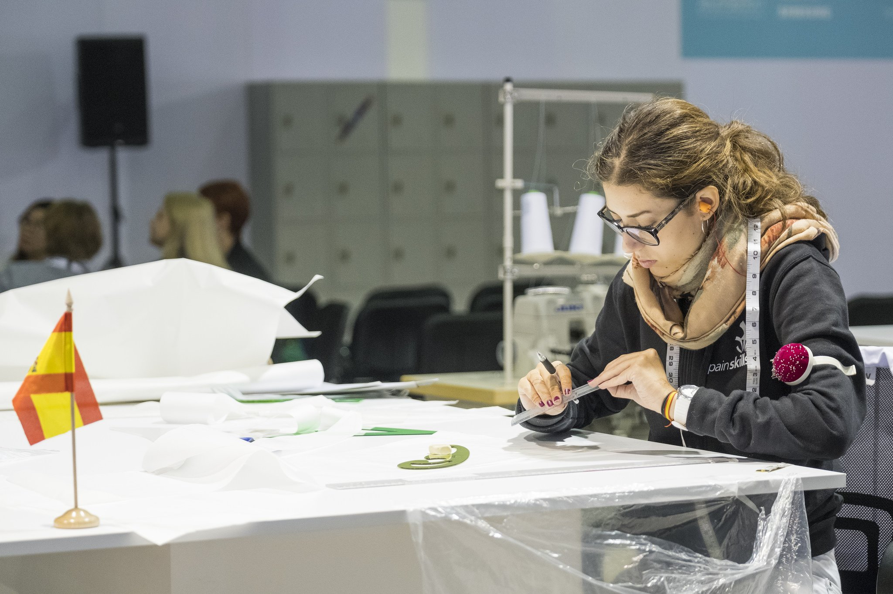

¿Le gustaría saber más?
- No dude en contactar con nuestro experto.
- Lorenzo@fpmislata.com

¿Le gustaría saber más?
Contempla la planificación, diseño y construcción de un sitio web.
Crean prendas de vestir, aplicando conocimientos en materiales y accesorios, tendencias de moda y color y realizan su trabajo según los parámetros y requerimientos del cliente o de la empresa de moda.
Los técnicos de la moda que trabajan para pequeñas firmas generalmente son los encargados de realizar los trabajos específicos de elaboración de patrones, corte y confección de prototipos, además de diseñar las prendas.
Ciclos formativos relacionados
Aplicaciones
Las aplicaciones de este sector se relacionan con la elaboración de patrones y escalados ajustados al diseño de una creación. De igual manera se confeccionan tanto a medida como industrialmente, prendas, complementos y otros artículos en textil y piel cumpliendo con las especificaciones de calidad, seguridad y protección ambiental.
¿Le gustaría saber más?